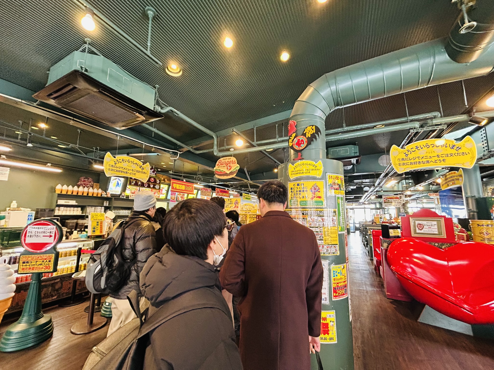

函館旅行記
12/15-17まで、友人と函館旅行に言ってきました。
自宅⇒羽田空港
行きは、羽田7:35発の飛行機でした。自宅は埼玉のそこそこ羽田から離れた場所にあるのですが、電車で１時間ちょっとで羽田までたどり着きます。全然始発なんて乗らなくても羽田には間に合うのに、始発に乗りたくてつい5:03発の電車に乗っていしまいました。
朝５時半の秋葉原はすべての照明が消えていて人も全くおらず少し不気味。
函館空港について、キャリーバックを受け取ったのですが、羽田空港で自分は鍵をキャリーケースに紐で縛ったまま荷物を預けてしまい、その鍵をなくしてしまいました。羽田・函館ともに空港や飛行機の中には鍵はなかったとのこと。旅行の最初にして最大のピンチ到来です。しかし、どうすることもできないのでそのまま荷物を預けにホテルへ。すると、もしかすると鍵を開けてくれるかもしれないお店があると聞きました。それは五稜郭の近くにあるのとのこと。本来の計画を変更して、初日に五稜郭に行くことにしました。
１日目 函館市街
まずは、函館市街の散策です。写真は日本で最初のコンクリート製電柱。あと有名な赤レンガ倉庫です。
昼ご飯は、ラッキーピエロで食べました。函館のソウルフードらしいです。安いのに美味い。あと、レジ周りの業務が効率化されていてすごいなぁと思いました。

12月なのでクリスマスツリーがありました。
１日目 五稜郭
ここからは、（キャリーケースを解錠するために）五稜郭に移動します。移動には市電を使いました。
五稜郭最寄りの停留所眼の前に、解錠してくれるかもしれないお店はありました。行ってみると、なんとものの30秒で鍵を開けてくれました！しかもお代はいらないとのこと！着替えとかが現地調達にならなくてよかったです。
五稜郭まで歩いていると、雪がだんだん強くなっていきました。最終的にはかなり吹ぶき、視程は100mといったところでしょうか。解錠したキャリーケースもトートバッグも雪まみれになりました。
五稜郭到着！そこには、江戸時代にタイムスリップしたかのようなモノクロの世界が広がっていました。
宿へ帰還
部屋が広い！！！